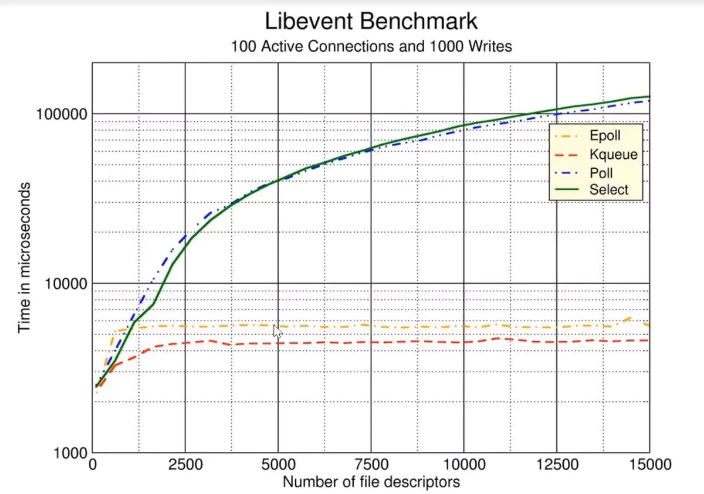

Socket 编程发展
Linux Socket 编程领域，为了处理大量连接请求场景，需要使用非阻塞 I/O 和复用。select、poll 和 epoll 是 Linux API 提供的 I/O 复用方式，自从 Linux 2.6 中加入了 epoll 之后，高性能服务器领域得到广泛的应用，现在比较出名的 Nginx 就是使用 epoll 来实现 I/O 复用支持高并发，目前在高并发的场景下，Nginx 越来越受到欢迎。
据 w3techs 在 2015 年 8 月 10 日的统计数据表明，在全球 Top 1000 的网站中，有 43.7% 的网站在使用 Nginx，这使得 Nginx 超越了 Apache，成为了高流量网站最信任的 Web 服务器足足有两年时间。已经确定在使用 Nginx 的站点有：Wikipedia，WordPress，Reddit，Tumblr，Pinterest，Dropbox，Slideshare，Stackexchange 等，可以持续罗列好几个小时，他们太多了。
下图是统计数据：

select 模型
下面是 select 函数接口：
int select (int n, fd_set *readfds, fd_set *writefds,
fd_set *exceptfds, struct timeval *timeout);
select 函数监视的文件描述符分 3 类，分别是 writefds、readfds 和 exceptfds。
- 调用后
select函数会 阻塞，直到有描述符就绪（有数据 可读、可写、或者有except），或者超时（timeout指定等待时间，如果想立即返回，设为null即可）。 - 当
select函数返回后，通过 遍历fd_set，来找到就绪的描述符。
select 目前几乎在所有的平台上支持，其良好 跨平台支持 是一大 优点。
select 的一个 缺点 在于 单个进程能够监视的文件描述符的数量存在最大限制，在 Linux 上一般为 1024，可以通过修改宏定义甚至重新编译内核的方式提升这一限制，但是这样也会造成效率的降低。
poll 模型
int poll (struct pollfd *fds, unsigned int nfds, int timeout);
不同于 select 使用三个位图来表示三个 fdset 的方式，poll 使用一个 pollfd 的指针实现。
struct pollfd {
int fd; /* file descriptor */
short events; /* requested events to watch */
short revents; /* returned events witnessed */
};
pollfd 结构体包含了 要监视的 event 和 发生的 event。
不再使用
select“参数-值” 传递的方式。同时，
pollfd并没有最大数量限制（但是数量过大后性能也是会下降）。
和 select 函数一样，poll 返回后，需要 轮询 pollfd 来获取就绪的描述符。
从上面看，select 和 poll 都需要在返回后，通过遍历文件描述符来获取已经就绪的 socket。事实上，同时连接的大量客户端在某一时刻可能只有很少的处于就绪状态，因此随着监视的描述符数量的增长，其效率也会线性下降。
epoll 模型
epoll 的接口如下：
int epoll_create(int size)；
int epoll_ctl(int epfd, int op, int fd, struct epoll_event *event)；
typedef union epoll_data {
void *ptr;
int fd;
__uint32_t u32;
__uint64_t u64;
} epoll_data_t;
struct epoll_event {
__uint32_t events; /* Epoll events */
epoll_data_t data; /* User data variable */
};
int epoll_wait(int epfd, struct epoll_event * events, int maxevents, int timeout);
主要是 epoll_create、epoll_ctl 和 epoll_wait 三个函数。
epoll_create函数创建epoll文件描述符，参数size并不是限制了epoll所能监听的描述符最大个数，只是对内核初始分配内部数据结构的一个建议。epoll_ctl完成对指定描述符fd执行op操作控制，event是与fd关联的监听事件。op操作有三种：添加EPOLL_CTL_ADD，删除EPOLL_CTL_DEL，修改EPOLL_CTL_MOD。分别对应着添加、删除和修改对fd的监听事件。epoll_wait等待epfd上的 IO 事件，最多返回maxevents个事件。
模型之间的对比
在
select/poll中，进程只有在调用一定的方法后，内核才对所有监视的文件描述符进行扫描；而
epoll事先通过epoll_ctl来注册一个文件描述符，一旦某个文件描述符就绪时，内核会采用类似callback的回调机制，迅速激活这个文件描述符，当进程调用epoll_wait时便得到通知。Libevent Benchmark 如下图（图片来自网络）：

epoll 的 优点
主要是以下几个方面：
监视的描述符数量不受限制，它所支持的
fd上限是最大可以打开文件的数目，这个数字一般远大于 2048。举个例子， 在 1GB 内存的机器上大约是 10 万左右，具体数目可以使用
cat /proc/sys/fs/file-max命令察看, 一般来说这个数目和系统内存关系很大。select的最大缺点就是进程打开的fd是有数量限制的。 这对于连接数量比较大的服务器来说根本不能满足。虽然也可以选择多进程的解决方案 ( Apache 就是这样实现的)，但这不是一种完美的方案。原因有两方面：- 一是，即使 Linux 上面创建进程的代价比较小，但仍是不可忽视的；
- 二是，进程间数据同步远比不上线程间同步的高效。
IO 的效率不会随着监视的
fd数量的增长而下降。（如上图所示）epoll不同于select和poll轮询的方式，而是通过每个fd定义的 回调函数 来实现的。- 只有就绪的
fd才会执行回调函数。
支持水平触发和边沿触发两种模式：
- 水平触发模式，文件描述符状态发生变化后，如果没有采取行动，它后面将 反复通知，这种情况下编程相对简单，libevent 等开源库很多都是使用的这种模式。
- 边沿触发模式，只告诉进程哪些文件描述符刚刚变为就绪状态，只说一遍，如果没有采取行动，那么它将不会再次告知。理论上边沿触发的性能要更高一些，但是代码实现相当复杂（Nginx 使用的边沿触发）。
mmap加速内核与用户空间的信息传递。epoll是通过内核与用户空间mmap同一块内存，避免了无谓的内存拷贝。